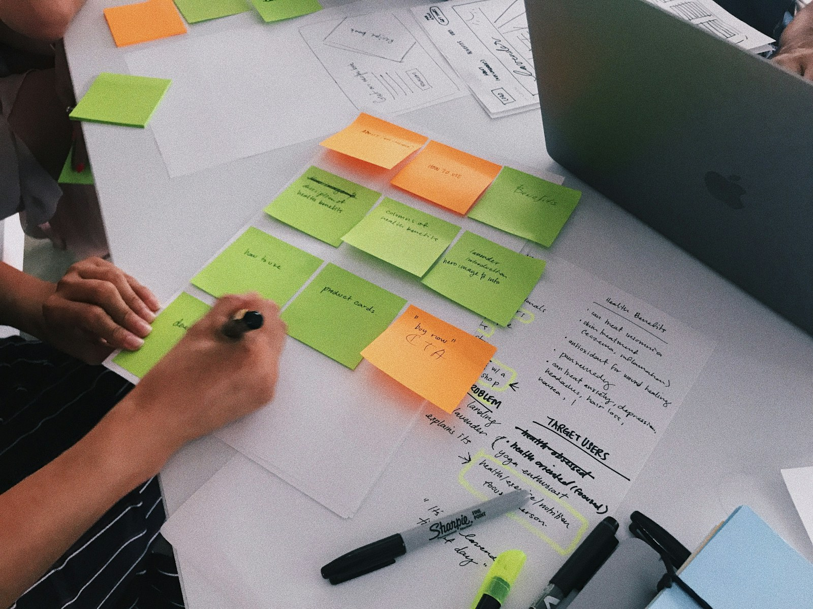

物流・運送会社では、既存顧客との信頼が売上を支える一方、顧客情報の属人化、新規開拓の停滞、案件別利益の見えにくさが課題になりがちです。営業だけを切り離さず、配車・運行・請求など現場と同じ情報を見ながら改善することが重要です。
物流・運送会社の営業に多い5つの課題
- 紹介・既存顧客への依存が強く、新規開拓が継続しない
- 荷物、条件、キーパーソンなどの情報が担当者の記憶にある
- 売上は把握できても待機・付帯作業を含む採算が見えない
- 「対応できます」「安くします」以外の強みを伝えにくい
- 営業が受けた条件と現場の実行条件にずれが生じる
これらは担当者個人の努力だけでは解決しません。共通の記録項目、相談のタイミング、見積判断、振り返り方法を仕組みにする必要があります。

顧客と案件を見える化する
高価なシステムを導入する前に、共通項目を定めます。顧客名、拠点、取扱品、物量、発着地、時間帯、車種、温度帯、荷役、待機、担当者、決裁者、現状課題、案件段階、見込金額、次回行動を一つの形式で記録します。
| 管理領域 | 記録する情報 | 得られる判断 |
|---|---|---|
| 顧客 | 拠点、荷物、担当者、課題 | 提案余地と関係者 |
| 案件 | 段階、金額、確度、期限 | 売上見込と次回行動 |
| 運行 | 距離、車種、時間、荷役 | 実行可能性と原価要因 |
| 失注 | 価格、条件、時期、競合 | 改善すべき提案要素 |
売上ではなく案件別利益まで見る
売上額が大きくても、空車回送、長時間待機、積み降ろし、再配達、特殊資材、外注費などで利益が残らない場合があります。営業初期から運行担当者と条件を確認し、見積の前提を記録します。契約後も計画と実績の差を見て、次回見積へ反映します。
発着地、距離、頻度、物量、車種、温度帯、時間指定、待機、荷役、付帯作業、高速料金、繁閑差、事故・破損リスク、再委託の有無。案件に応じて必要項目を選びます。
価格以外の価値を提案へ変える
顧客が求めているのは運ぶ行為だけとは限りません。欠品防止、納品時間の安定、問い合わせ対応、繁忙期の波動対応、誤出荷削減、管理負担の軽減など、事業上の課題を聞き取ります。自社の対応力を顧客の成果につながる言葉へ変えることで、単純な価格比較から抜け出しやすくなります。
機能だけの説明
車両があります。柔軟に対応します。経験があります。
顧客価値を伝える説明
繁忙日の増便判断を早め、欠車リスクと担当者の調整負担を抑えます。
営業改善を定着させる5ステップ
- 01現状把握
顧客別売上、利益、案件、失注、営業活動を整理します。
- 02重点顧客を決める
自社の設備・地域・得意条件に合う対象を具体化します。
- 03記録を統一する
顧客・運行・採算・次回行動を同じ形式で管理します。
- 04営業と現場で確認する
提案前に実行条件、提案後に差異と課題を共有します。
- 05勝ち方を標準化する
受注理由を資料、見積、質問項目、教育へ反映します。
営業会議のチェックリスト
- 次回行動と期限があるか
- 30日以上停滞した案件はないか
- 利益条件を現場と確認したか
- 失注理由を分類したか
- 既存顧客への追加提案はあるか
- 受注方法を他担当へ共有したか
よくある質問
営業専任者がいなくても改善できますか？
可能です。経営者や配車担当者が持つ顧客情報を整理し、対応できる時間と役割から小さく始めます。
新規開拓は何から始めるべきですか？
地域や業種だけでなく、自社が利益を出しやすい荷物・距離・時間・車種の条件を明確にし、対象を絞ります。